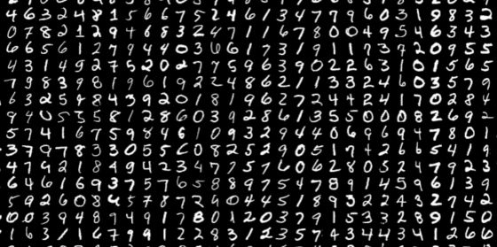

Programmer
Data Scientist
Creator
Featured
VAE using MNIST

A Variational Autoencoder built in PyTorch, trained on MNIST — exploring autoencoder architecture.
Github ->

I'm Rakshita Danee — a data scientist and builder driven by curiosity about how machines can understand the world, and how that understanding can be turned into tools that genuinely help people.
My work sits at the intersection of machine learning and accessibility. I believe data science is most powerful when it removes barriers — whether that means better assistive technology, more inclusive design, or clearer communication of complex ideas.
I learn in public, share everything openly, and care deeply about making the field more accessible to everyone. On this site you'll find my projects, writing, talks, and experiments — all shared freely.